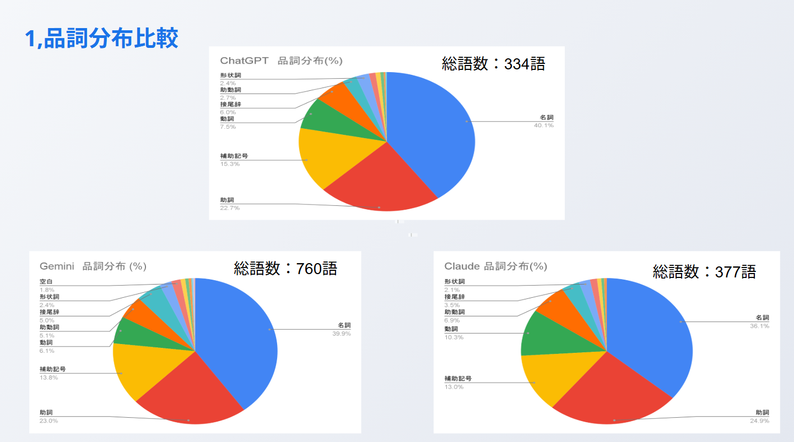
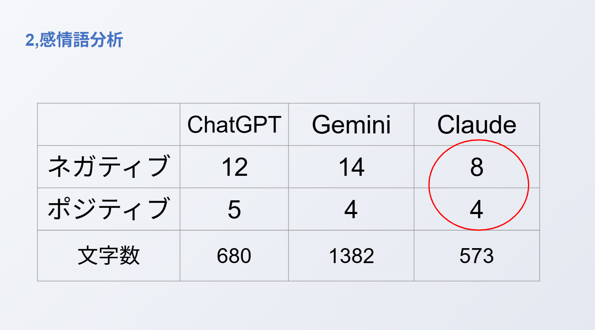
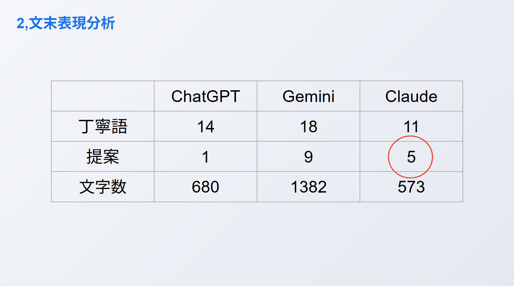
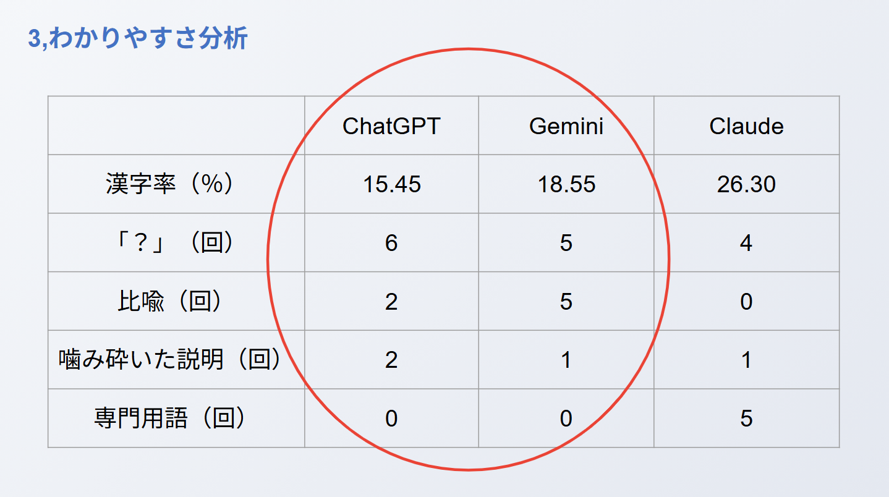

≪制作について≫
分析の目的
分析の方法
分析ツール
- ChatGPT (GPT-4o mini) *以下ChatGPTと呼ぶ
- Gemini (Gemini 2.0 Flash) *以下Geminiと呼ぶ
- Claude (Claude 3.5 Sonnet) *以下Claudeと呼ぶ
- sudachiPy : 高精度な日本語形態素解析ライブラリ
共通プロンプト
- 地球温暖化について説明してください
- 失敗したとき、どう立ち直るべきかアドバイスをください。
- 生成AIってなに？小学生にわかるようにおしえて。
分析方法
- プロンプトAをChatGPT,Gemini,Claudeに入力し、回答文において総語数と品詞分布を分析する。
- プロンプトBをChatGPT,Gemini,Claudeに入力し、回答文において感情語と文末表現を分析する。
- プロンプトCをChatGPT,Gemini,Claudeに入力し、回答文において漢字率と専門用語使用率を分析する。
分析の結果
1,総語数と品詞分布

語数にばらつきはあるものの品詞分布はどれも同様の構成であった。出力が箇条書きの部分も多く、接続詞に注目し、文章の展開力を分析することはできなかった。
2,感情語と文末表現

文字数当たりの感情語は、ポジティブな表現もネガティブな表現もClaudeが最も多い。

文字数当たりの提案表現は、Claudeが最も多い。しかし、キーワードが文中にある場合があり、文末だけでは判断できないこともあった。
3,漢字率と専門用語使用率

漢字率や？の使用回数、比喩表現、わかりやすい表現、専門用語の少なさはChatGPTとGEeminiが各項目で同程度のスコアであった。Claudeは専門的な表現や言い回しが多く、漢字率も高い。
考察
- 事実を尋ねたいとき、詳しい調べをしたいとき → ChatGPT、Gemini
- 私的な相談、アドバイス、寄り添ってほしいとき → Claude
- 小学生が調べものに利用するとき → ChatGPT、Gemini
これらを使いこなすために
- 使い道に応じた媒体の選定が重要
- もしくは、目的に沿った丁寧なプロンプトを設定することが効果的
各文章生成AIごとに特徴がある。その特徴を理解することで、用途や目的に応じた最適なAI選択と効果的なプロンプト設計が可能になる。